MEDIAART 2G03: The spectrum (sound as mixed frequencies)
Sine Waves, Frequency, Hertz
In order to get into this topic, we're going to talk about a particular type of shape of wave that is really key in lots of different kinds of audio work, and in lots of different kinds of talking about audio. And that shape is the sine wave. The diagram below shows a typical sine wave. Actually, we see one and a half sine waves here. The sine wave is a shape that starts from a neutral or rest position, and in a smooth curve goes up to some maximum, and then back down through the rest position, and then in a similar smooth curve, goes to the anti-maximum or minimum, and then in a smooth curve comes back up to that rest position here. So the shape in the diagram is one cycle of a sine wave, and we've got kind of an extra half cycle as well.
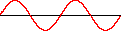
The sine wave is important because it is closely related to mechanical motion in the “everyday mechanical world” of the planet Earth. For example, if we take a pendulum, like the Foucault's pendulum shown in the image below, and we let it rock back and forth (like we pull it back and then let it go), and if we were to make a graph of the left or right (the "x position" of that pendulum over time), it would look kind of like this sine wave. Except that as time went by, successive peaks of the sine wave would get smaller. That's just one of many ways of demonstrating that sine wave type motion is something that happens in the everyday mechanical world of objects moving around.
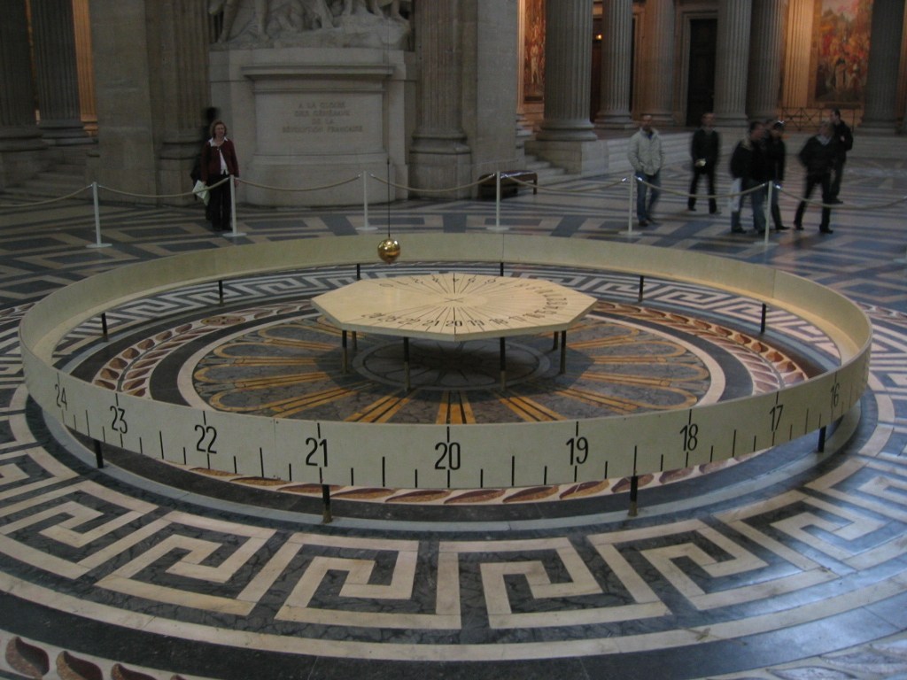
Sounds are basically also like the pendulum: they are things that vibrate. Some energy goes into a system, it vibrates for a while, it vibrates back and forth, and eventually all the energy is gone. And so it shouldn't be too surprising that we will be able to find this shape in various ways, in the the much more complex sounds that we deal within our work.
We have a unit of measurement for describing repetitions of these sine waves (a unit of measurement for describing how rapidly that shape repeats itself), and it's the unit Hertz, which means cycles per second (but we will most often say Hertz). For example, if we say that something is at 1 Hertz, what we mean is that it repeats once per second... If it's at 2 Hertz, then the same shape repeats twice as fast. We'll also often use the unit kiloHertz (abbreviated kHz). One kiloHertz is a thousand kiloHertz, so a 3 kiloHertz sine wave would be a sine wave that repeats that shape 3,000 times per second.
If we combine this with what we learned in another module, where we described audio signals in terms of how high they were (their peak, their amplitude), using decibels, if we combine that with Hertz, now we have a way of describing and measuring shapes like these sine waves in terms of two independent dimensions. One dimension is frequency (how fast the shape repeats), and the other dimension is amplitude (how big or how high that waveform is, or how close it is to the maximum).
Frequency and Pitch demo video
We'll do some more expansive demonstrations and experiments with frequency and pitch in our full-class meetings. Nonetheless, mostly for the benefit of helping anyone who misses those catch (partially), here is a demonstration video of some simple relationships between frequency the phenonemon (i.e. the perception) of "pitch": Frequency and Pitch demo video
The audible spectrum and equal loudness curves
Common figures for the frequency range of human hearing:
You'll commonly hear 20 Hertz or 20 times per second cited as a rough figure for the lower limit. It is possible to hear things below 20 Hertz, particularly under the right circumstances with the right loudspeakers. Also those very low frequency signals might become audible in various other ways, including sometimes through our bones.
20 kiloHertz (or 20,000 times per second) is a common rough figure for the upper limit of human hearing in terms of frequency. And here the thing we should note is that differences between humans (sometimes related to hearing loss but not always) mean that in practice, the upper limit is going to be somewhat, or much lower than 20 kiloHertz. But be that as it may, audio technologies are typically designed around the "optimistic" assumption that we can hear things that move as fast as 20 kiloHertz, and things that move as slow as twenty times per second.
The graph below shows the results of research from the 1930s, by Fletcher and Munson, alongside a more updated (yet similar) analysis of the same phenomenon: the equal loudness curves. What the graph shows is the result of psychoacoustic measurements, where people were exposed to sounds at particular frequencies, and asked to rate them for how loud they were in various ways. And on the basis of those types of experiments, they (e.g. Fletcher and Munson) were able to draw these graphs of the equal loudness curves. And basically what the graphs show is how much energy, how much level, how much amplitude, you need to give the same impression of loudness at different frequencies.
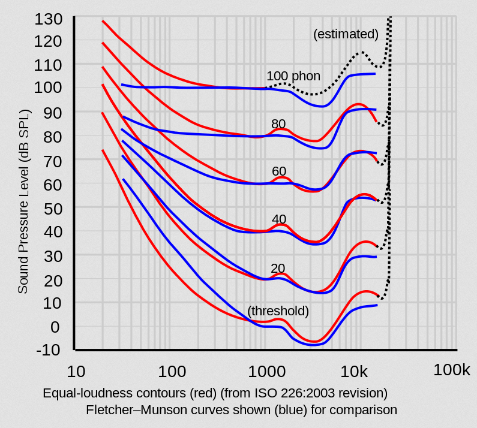
Frequency is along the bottom of the graph, and what we kind of see is that in the very low frequencies (like in the 10 to 100 range), you need a lot of energy, a lot of sound pressure level to give a certain impression of loudness. And then if we follow one of those lines across into the thousand to three thousand range, that's where we see that we need the least energy to give the same impression of loudness. And then after that point, as we get into the high frequencies (getting into four or five and then ten kiloHertz and above), the amount of energy we need goes up again.
So that's the equal loudness curves, and what they really show is that there is a really complicated relationship between loudness and frequency and levels. And I think that there are lots of consequences, lots of implications we might draw from this, but I think one of them is just to reiterate that when doing audio work, looking at the visual appearance of a signal (how big it is) doesn't really tell us that much about what it sounds like - and this is one of the reasons why.
Sound as Mixed Frequencies, and Spectrograms
Another reason why looking at the signal (or looking at the “raw shape” of the signal) doesn't really tell us that much about what something sounds like, is that typically real-world sounds are sums of lots of different frequencies.
The spectrogram, an example of which is in the image below, is an analytical tool that lets us take that apart. The spectrogram is an analysis that you can do to an audio signal, and what it does is it breaks the audio signal down into lots of different frequencies and shows how much power each of those frequencies has over time. And in this particular spectrogram, the frequency is the y-axis, and there on the left side of the graph we can kind of see that it says 93 Hertz at the bottom and the numbers go up. The numbers keep going up all the way to about 46,500, which is well above the range that any human can hear.
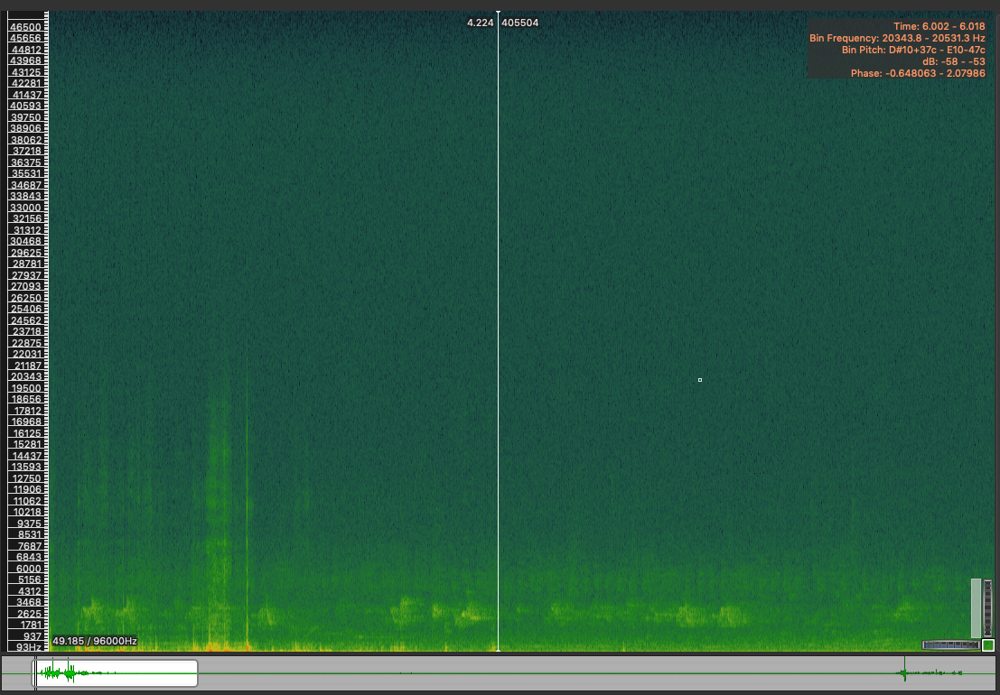
And then time is left to right, as in so many of our interfaces. And then the color within shows us how much power there is. The areas that have the most power the areas that are marked as red (such as these little areas down here), and the areas that have a kind of intermediate level of energy or power are the green ones. So in this particular sound, we can see that it has a lot of energy sort of spread over the whole spectrum, a lot of different frequencies are present. And then we can see some particular areas, particular moments in time, and particular ranges within the range of possible frequencies, where there is some more energy.
So this lets us define the spectrum then. The audible spectrum is the space of frequencies that we can hear and also modify. And this is important for a number of reasons, probably the most important is that our ability to separate and follow different sounds (sometimes called streaming and segregation), is really closely related to it. We've also seen that we're sensitive to things like loudness, pitch, brightness versus darkness, and these are also closely related to the way things are distributed in the spectrum. So thinking about and working with the spectrum is going to be commonly a central part of audio work.
Parts of the ear
Here's a Creative Commons 0 diagram of the ear that I found on the Internet, and I'm going to use that to structure this discussion. Basically, there's going to be five key parts for the purposes of our discussion that we're going to go through. And for each part, we'll talk not only about where it is, but about what function it appears to serve in our auditory perception.
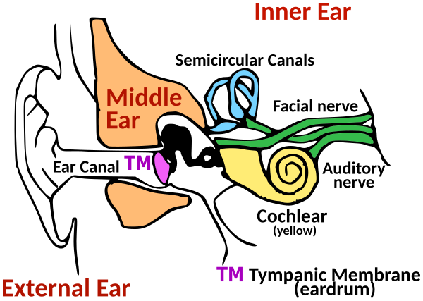
So the outer ear, or pinna/pinnae (plural), is that fleshy part of the ear that we can often see on each other. And it's not just for holding earrings or other body modifications, it serves a function in the auditory perception system. It's actually a directionally sensitive filter. And what that means is that if sound waves come from different directions (they arrive at the outer ear from different directions), they're filtered in different ways, to emphasize or deemphasize particular frequencies. It's a biological filter... a biological, directionally sensitive filter. Part of our perception of sounds as moving in space and as coming from particular points in space, is due to our brain's ability to recognize when that filtering has taken place in the outer ear.
Acoustic energy (vibrating air) goes through the outer ear, and then it goes into the ear canal. And the ear canal also has a function: it's a fixed filter. And the purpose of this fixed filter is really to emphasize the frequencies that are closest to human speech. In another module, we looked at the equal loudness curves and we saw that kind of in the range from about two thousand to four thousand kilohertz, the ear is very, very sensitive. That's also the range where a lot of really key information about human speech is located, such as the difference between different consonants and the difference between different vowels. And so we're most sensitive in that part of the spectrum where we are able to communicate with each other, and that is closely tied to the ear canal, which naturally boosts those frequencies, those frequencies that are (often) so important for human vocal communication.
The third part of the ear is the ear drum, or tympanic membrane, and this is basically a transducer. So on the left side of the eardrum, what we're really dealing with is vibrating air. But on the other side, what we're really dealing with is human flesh and bone that is vibrating. So these are different kinds of things. And it's the ear drum (this piece of flesh), that in some sense is part of your skin, that is responsible for that transduction, for that transformation of the signal from vibrating air to a moving body part.
And directly the other side of the eardrum, we encounter a series of tiny bones called the ossicles. And what the ossicles are responsible for is the stapedius reflex. So I don't know if any of you have ever been in a loud concert, and come out from the concert and the entire world seems quieter as a result of it. In many cases, this is because the ossicles have responded to that punishing sound level of that concert you were in, by moving to a slightly different configuration that doesn't allow quite as much energy to go onto the next step. The ossicles are these bones that can change configuration as a kind of protective measure against extreme sound levels. It's not actually a very good protective measure, you can totally do damage to your hearing, which is a thought we're going to come back to in a second.
So what the ossicles are really protecting, is the fifth and final stage here, the cochlea, which is this curled tube here. It's a fluid filled tube. And what you don't see on the diagram [at the top] is that on the walls of the tube, are lots of little tiny hairs. And the hairs can be moved by the fluid as it vibrates, and the motion of those hairs generates little electrical impulses that travel into your brain and are processed by other levels of your auditory perception system. And so the key thing to realize about this key structure, this fifth structure in our journey through the ear here, is that different hairs in the cochlea will vibrate in response to different frequencies. So the cochlea is kind of like a biological spectrum analyzer. In another module we looked at a spectrogram, which was this analytical tool that took a signal and broke it down into the presence of different frequencies, at different points in time and at different levels of power. Well, the cochlea is basically a biological version of that.
And one of the forms that hearing damage takes, is those hairs or the nerves connected to, them dying off. Then, a particular human may longer be able to accurately sense the presence of a particular frequency or a particular range of frequencies, because of the damage to that hair or the associated nerve. It's a very fragile and also a very tiny organ. And the damage that happens to it may never be repaired or may take a very long time to be repaired. So this is the moment, I think, at which I will make a plea (probably not the only moment). This is the moment at which I will make a plea to all of you to take care of your hearing, by attempting to be aware of when you are exposing yourself to situations that might damage it, and to take measures to protect yourself and to protect the hearing of others.
So quick summary of what we talked about in this module; sound travels through multiple systems of the ear and it changes in form and content as it goes. We saw that the final component of the ear, the cochlea, is a kind of spectrum analyzer, and this really explains why work with the spectrum is often so fundamental when we're working with audio. And finally, we saw that it's possible to permanently damage the hearing system through exposure to high sound pressure levels, especially but not only, at high frequencies.
Filter types
Filters are the most common and basic tools for manipulating the spectrum of an audio signal. There's a close relationship between the word "filter" and the concept of the spectrum; in other words, that space of all possible audible frequencies. Filters are tools that let us increase or decrease the level (amplitude) at which certain ranges of frequencies are present.
So filters are a very specific type of tool, it's a very specific definition, and so we'll need to keep straight that this definition is really a much more specific one than the more general meaning of filter that you sometimes encounter in media production software, digital photography, etc. For example, in software like Photoshop or the GNU Image Manipulation Program, it's common for a filter to mean really anything that changes the image into something different. But with audio, a filter really refers to something that lets us increase or decrease the level at which a particular range of frequencies is present in our signal.
There's quite a large number of different types of filter, but there are some common types that we are most likely to use, and we'll now introduce six of those common types.
In the image below, we have a graph of the typical response of a high-pass filter. Frequency on this graph goes from low over in the left corner, to high over on the right, and what the graph is showing us is how much frequencies are boosted or reduced at those frequencies. And what it's showing us basically is that the very high frequencies are present there, basically as is, and then as we come down past a certain point, the frequencies are removed moved more and more aggressively. So this is the high-pass filter. It's a filter that above a certain frequency, the frequencies just pass through, and below a certain frequency, the frequencies are reduced quite dramatically.
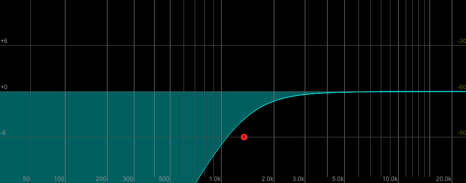
The opposite of the high-pass filter would be the low-pass filter. Here's [below] a graph of a low-pass filter. So below a certain frequency, the frequencies just pass through essentially unmodified, but above that frequency they're reduced more and more aggressively.
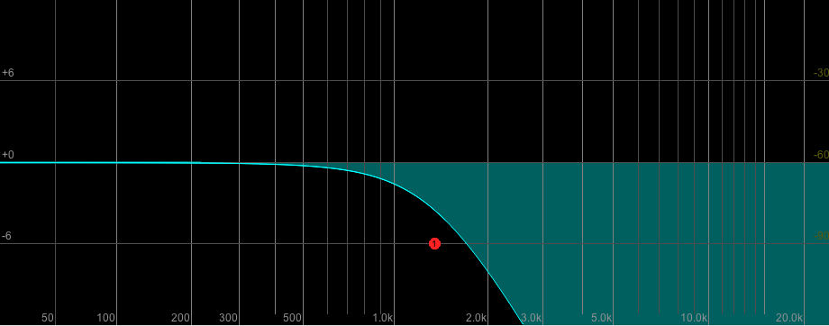
High-pass and low-pass filters are similar, but not the same as high shelf and low shelf filters. The next image [below] shows a low shelf filter, and what we see is that well above a certain frequency, the frequencies are present as is. Then there's a kind of reduction (or it could be an increase as well) as we go past a certain frequency, and then once we're a certain distance past that, things level off and they stay the same for the remainder of the journey to the edge of the graph. That's a low shelf filter.
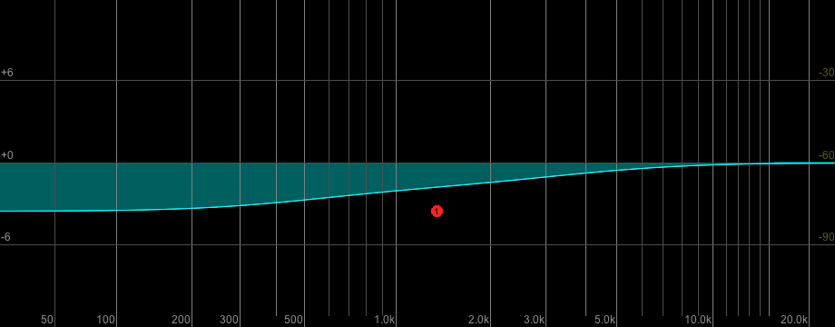
And the opposite of the low shelf filter is the high shelf filter [image below], where the low frequencies are present as is, and then past a certain point they start being reduced somewhat, but then at a certain point past that, the reduction tapers off and things are not being (increasingly) reduced anymore.
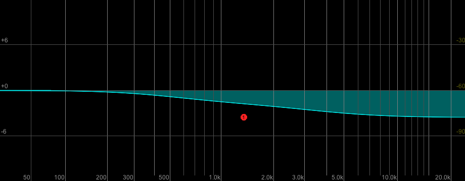
So you can think of the high shelf and the low shelf filter in some ways as less exaggerated versions of the high pass and the bandpass filters. It's important to notice that the terminology is backwards, that over here is the high pass filter (and it's shape, you see it reduces a lot of low frequencies), the high pass filter is most closely related to the low shelf filter. And the low pass filter here is most closely related or most similar to the high shelf filter here.
There are two more common types of filters to mention, the band filter and the notch filter, and one is really a variation on the other. The band filter is a filter that reduces (or could emphasize, also) the frequencies around a particular frequency in the spectrum. And the notch filter is really just a much more exaggerated version of the same idea. So you can see here that in this diagram of a notch filter [image below], the low frequencies are present basically at the same level they were going into the filter, and the high frequencies are present basically the same level they were going into the filter, but around this frequency things are really radically reduced or eliminated. We could also boost those frequencies if we wanted with a different configuration of the filter.
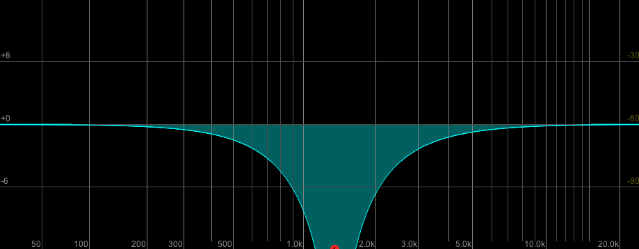
Filter parameters and EQ
The image is a screenshot from the Reaper digital audio workstation, showing a single band filter, and we see that the filter has basically three controls. It has a frequency control which is measured in Hertz, a gain control which is measured in decibels, and a bandwidth control (which in this case is measured in "octaves").
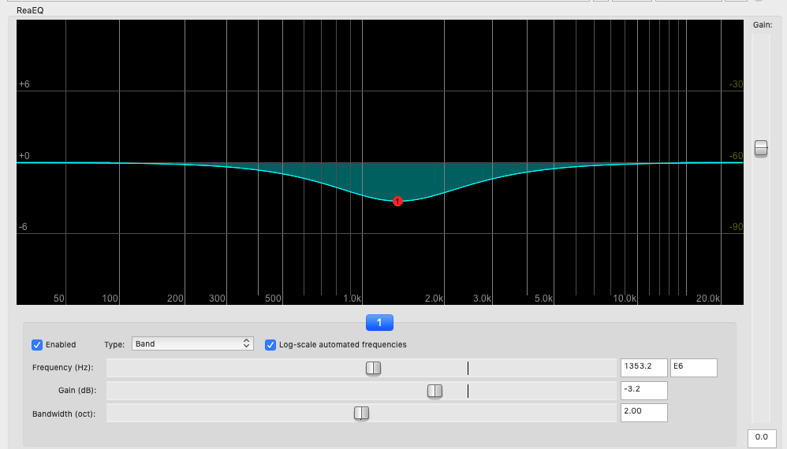
The frequency control is basically allowing us to specify at what point this shape is centered in the spectrum. We can maybe emphasize or de-emphasize lower or middle or high frequencies, and we can move that control around in a very fine-tuned way to make very particular adjustments to the sound.
The gain control is controlling how high or low this shape bends away from the middle. So we have some negative gain right now (it says minus 3.2 decibels which is why that shape is bending down). We could also increase the gain to a positive number, and then the shape would bend up in that part of the spectrum instead.
And the third really common parameter of a filter that we're seeing here is called bandwidth in the Reaper interface. And when it's called bandwidth (as it is here in Reaper), as it gets bigger, basically the shape smoothes out and occupies more space in the spectrum. And as bandwidth gets smaller, this shape gets more narrow and it comes into being a little bit more like a notch filter. Basically the bandwidth is a measurement of how specific the filter is; more bandwidth equals less specific, less bandwidth equals more specific. I think the key to remembering that is in the word "width": Bandwidth is a measure of how wide the shape around the central frequency that you're setting for the filter is.
You will also encounter another way of talking about this same parameter: you'll sometimes hear it called "Q" instead. "Q" is short for "quality," and the history of this is that when these filters were first invented, their initial application was really for telecommunications engineers who were wanting to restore signals to intelligibility that had traveled over really long and really not very good early telecommunications cables. And so in those settings, if you could make a filter that was really specific, that was called a high quality filter or high Q. And if your filter wasn't really specific and didn't let you kind of do "surgical" things or very extreme things to the spectrum, it was a lower "quality" filter. And so I think the thing to take away from this is that Q works the opposite way of bandwidth. If you make higher Q (higher quality in that kind of unusual sense of the word quality), what you're doing is making a more specific filter. “Higher Q” is a shape that will be narrower on the graph (lower bandwidth), and lower Q will be a shape perhaps more like a smooth gradual curve across the spectrum (higher bandwidth).
Typically, we use lots of filters together: we use banks of filters. In the screenshot below from the Reaper digital audio workstation, each of the numbered handles represents a different filter and a different type of filter that's being combined to change the spectrum of the audio signal. We can see that some of the very lowest frequencies are being removed, and then sort of in the range from just under 200 Hertz to about one kiloHertz, we have a kind of gentle rise and fall. And then from one kiloHertz really to the rest of the spectrum, we have a kind of gentle reduction of how much energy there is. So this is really common, and often the plugins that let us combine filters in this way are called "equalization" or "EQ."
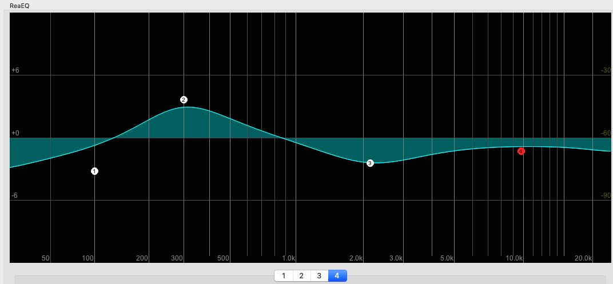
And the history of that (the term, “equalization”) also goes back to early experiments with telecommunications. When signals were transferred over long distances, they tended to lose energy in different parts of the spectrum. And engineers figured out that you could combine filters to boost the energy in different parts of the spectrum, and appear to get back what was lost to some or other extent. So it was like you were making the received signal equal to the one that was sent, and so they called it "equalization." And there are various other more contemporary contexts where that meaning makes sense too, but we'll also see there's lots of settings where thinking of what we're doing with these filters as equalization, doesn't really make a lot of sense... but everyone still calls it "EQ" or "equalization" anyway.
What we really need to remember is that when people are talking about equalization or EQ, they're really talking about plugins or other devices that let you change the shape of the spectrum in systematic ways, by combining filters.
Filter tips and uses
So some pro tips for using filters...
Tip 1: usually you filter downwards preferentially. The history of this is that once upon a time, making sure that the different parts inside the studio or inside an audio system didn't clip by having levels go too high, was even more important than it is nowadays, and so people got into the practice of mixing downwards and filtering downwards. And I still think it's a really good practice today, and basically for the same reason: that we have projects and that we put things into those projects, and as we put more things in, they tend to add up to more and more. We might reach a point where we are clipping during mixing and having to turn down, and we'll be less likely to have that moment if we've been kind of taking things away, moving things down rather than moving other things upwards as we go.
Tip 2: It's really common to use multiple gentler filters instead of one more extreme filter. So an equalization plug-in like that Reaper one we looked at a second ago, lets us have lots of filters and combine them in an interface, and often maybe we will get a better result by using multiple gentler filters instead of one very extreme one.
Tip 3: And finally, and I think most importantly, our sounds tend to be distributed through the spectrum. We saw earlier that real world sounds tend to be the combination of lots of different frequencies, they're not only in one place in the spectrum. So when we use a filter to attempt to reduce or remove some part of the spectrum that maybe we don't want to hear, we'll probably also be removing other things that we do want to hear, and vice versa. So when we work with filters, it's really important to pay attention to the effects of filtering on all of the sounds in the sound scene that we're working with.
And now, some common uses of filters, by no means an exhaustive list...
Sometimes we'll have low frequency rumble from traffic or air conditioning in our recordings, and filters give a straightforward way of reducing the presence of that noise in the signal.
Sometimes we will have recordings that are excessively bright; in other words, which have lots of high frequencies, particularly when they come from “condenser microphones” (which we will talk about in another module).
We will often use filters to emphasize or de-emphasize particular characteristics or characteristic frequencies of particular sound sources (that's probably the most general use of a filter in audio work).
And finally, we may be able to find unusual and new sounds, especially but not only, when we use extreme filter settings (that starts to get into the later topic of exploratory transformations...).